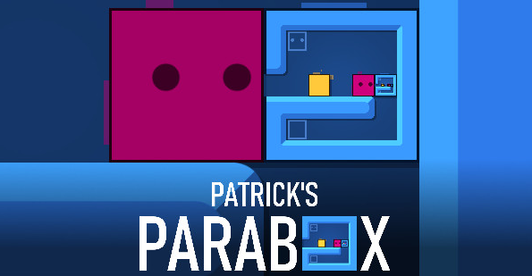
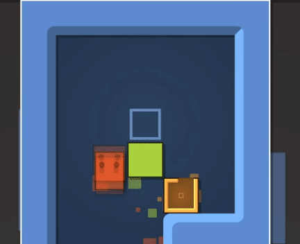
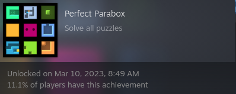

Recently I finished Patrick’s Parabox ↗ and can recommend it to anyone who likes puzzle games. The whole game is in-theme and the production is very good. Great deal of planning seems to have gone into the puzzles and their progression is well thought-out.

The game uses well-known and easy-to-understand Sokoban mechanics while always adding something new to them. The main change is that each block that player usually pushes is itself a map and can under some circumstances be entered and exited. Though the game is 2D it reminded me of Portal because it introduces and explores this map-mechanic in-depth and its interaction with many other cute mechanics.

The game present around 360 puzzles. Each puzzle is self-contained and bite-sized. They are structures into “worlds” that clearly introduce new mechanics. Aside from the main-line puzzles, each “world” contains a series of little more challenging side puzzles. Complex combinations of mechanics do not appear in the main line, only at the very end in the challenge section.
As an example of a mechanic that we see even in trailers is recursion – having a box within itself as in the following gif. There are other interesting mechanics and even those you may think of while playing may appear later or in the “extras” section.

From the main maps I got stuck a little on roughly 20 and stuck quite a lot on cca 5. Maps in challenges were … more challenging. Returning to them for several days, trying them, sleeping, and repeat proved to be a working strategy, cheers!

The game also reminded me of Stephen’s Sausage Roll ↗, I wonder whether having name of the author in the name of the game is an inside joke.